Chapter 01 资产总览
这份页面只保留 chapter-01 当前仍有长期价值的资产入口：稳定角色、场景母图、关键镜头、交付视频与可复用 UI 层。不再保存过程复盘、失败分支、请求日志或临时计划。
当前总览
主角阵列 已收束为玩家主位、林澄、祁野、闻夏、回响、档案守望者、阿潮，以及制度对手序列员 07。
当前稳定母图 为 `S-01 / S-02 / S-04 / S-06 / S-07 / S-09 / S-11`，足以支撑 chapter-01 的开场、制度压力、家庭等待区冲突、概率长廊奇观、公共表达与回航收束。
P01 已更新到 `v13` synced-dialogue 主交付。这一版延续 `v12` 的开头声场与灰银任务牌修正，同时把 `S06` 换成新的林澄同步镜头版本：台词改为更短、更稳的句子，并在镜头结束前自然落稳，不再出现“话还没说完就被截断”的感觉。旧 `v8` 继续保留为 teaser 对照版。P02 已建立 `delivery v1` 主装配文件，并保留 `paper cut v1` 作为节奏验证基线；当前已正式接手下一条 active lane，优先清 `B01/B04` 的真实视频插槽。P03 已提升到 `part-03-archive-hall-pressure-delivery-v2.mp4`，当前定位为 `PASS WITH NOTES` 的 current 交付入口：这次不是假装拿到更强正式 clip，而是把已验证过的 relation-led 低成本重装配正式接管主线，用更清楚的 `C02/C04` 关系推进替换旧版的借镜问题。P04 已收成 `part-04-waiting-zone-and-father-delivery-v1.mp4`：等待区先成立，再进入父亲与林澄的双目标与同步短线，不再把空间、物件压迫和双人对白压成同一团。P05 已升级到 `part-05-probability-corridor-delivery-v2.mp4`：`D02` 现在已经由真实 `viduq3-turbo` 路径比较 clip 接管，不再只是“同一张图上的路径说明层”。P06 已升级到 `part-06-dark-layer-interface-delivery-v4.mp4`：`E01-E04` 现在都已接入真实 `qingyun / viduq3` 动态短 clip，这一段已经脱离“静图晃动 + rescue 顶主线”的假视频状态，当前 notes 收缩到节奏、声场与 `P05 -> P06 -> P07` 连续性。P07 已收成 `part-07-silent-practice-room-delivery-v1.mp4`：这段现在已经能按“进入沉默练习室 -> 看到生活痕迹 -> 听见旧见证 -> 停下来听”顺序独立审片，不再只是 bridge 中的一组素材。P08 已收成 `part-08-rule-projection-room-delivery-v1.mp4`：规则投影室、模型压力、`07` 的制度短句与预回应现在已经能作为独立 part 审片，不再只靠后面 `P10` 倒推。P09 已收成 `part-09-evidence-freeze-team-split-delivery-v1.mp4`：这段已经能按“授权诱惑 -> 顺滑错觉 -> 07 冻结质疑 -> 系统冻结 -> 团队第一次真实分裂”顺序独立成立，不再只是 preview 里的最后一块纸片桥。P10 已收成 `part-10-free-echo-platform-delivery-v1.mp4` 并进入 `accepted_with_notes`：`F03` 现已升级为新 key 打通的 `viduq3-turbo` 正式短 clip，高潮段不再靠 rescue clip 承担对手入场；当前 notes 已收缩到 `F01/F02/F04` 仍保留静帧 / UI-first 痕迹。P11 已收成 `part-11-midnight-choice-return-delivery-v1.mp4`：`G02` 正式人物 clip 已经接入主装配，整段现在能按“结果回到林澄面前 -> 结尾陈词 -> 制度接收 -> 回航桥接”顺序正式审片。P12 已收成 `part-12-digital-mentor-delivery-v1.mp4`：当前正式采用 `voice-first` 收束，不再假装可见导师人形已经锁定。整章当前 accepted master 继续保持不变，但章节级完整故事预览已经升级为 `story spine v4`。
当前视频主线 chapter 级 accepted spine 仍然只覆盖 `P01-P06` 与 `P10-P12`，这一点没有假装被改写；但 `P07-P09` 现在已经正式回到视频主线推进，并都形成了独立 `accepted_with_notes` part-level 交付。因此这页现在同时保留三条观看口径：`chapter-01 master current` 继续承担旧 accepted 审片入口，`story spine v4` 承担目前最完整的整章故事流畅度预览，而 `P07/P08/P09 current` 则代表中段三段已经真正完成的独立交付。
补桥结果 当前已经推进到 `v4`：`P07-P09 middle bridge v3` 继续保留为结构诊断基线，而新的 `chapter-01 story spine preview v4` 已经不再靠 bridge 顶中段，而是直接把 `P07 / P08 / P09` 的正式 part delivery 插回整章。它仍不替代 accepted current，但已经更接近“完整第 1 集应该怎样顺着看下去”的章节级口径。
当前结论 `P01-P04` 的故事可读性已经明显修正，人物来历、场景来源和任务交班不再像突然冒出来。当前最大的正向变化是：`story spine v4` 已经把“中段完全缺失”推进到“中段正式 part 已插回整章，整条 chapter 基本能顺着因果往下看”，而且 `P05` 与 `P06` 都已经从假视频重灾区升级成真实段落。剩余问题更聚焦了，不再是“哪里突然冒出来”，而是 accepted master 与完整故事 preview 之间仍存在一条主线口径差，以及 `P02/P10/P11/P12` 的假视频债务还没有清完。
当前硬判断 chapter-01 现在仍有多段在用 `still-motion / UI-first / rescue clip / voice-first clean plate` 撑过 accepted spine。它们不再被视为“可以长期保留的 production 风格”，而被正式定义为必须逐段替换的交付债务。
当前假视频替换队列
P02 当前 `B01/B04` 的正式视频插槽尚未补齐，`B02/B03` 继续保持 `UI-first`。它已经能交代规则，但还没有彻底摆脱静帧驱动装配，因此当前成为最高优先假视频替换位。
P11 只有 `G02` 已经是正式人物 clip；`G01/G03/G04` 仍靠图片推进。结局如果继续这样，会削弱“已经真正落地”的体感。
P10 虽然 `F03` 已经升级为正式 `viduq3` clip，但 `F01/F02/F04` 仍带着明显的静帧与 UI-first 气质。它不再是“卡住高潮的救援位”，却仍是后续值得继续升格的 demo 感残留区。
P05 当前已完成 `D02` 真实 clip 替换，并收成 `delivery v2`。这段不再属于假视频债务最高优先队列，后续只保留时长与比较节奏 notes。
P06 当前已完成 `E01-E04` 全部真实短 clip 替换，并收成 `delivery v4`。这段不再属于假视频债务最高优先队列，后续只保留节奏和连续性 polish。
P12 当前仍是 `voice-first clean plate`。这段可以最后处理，因为它至少是有意识的 world-in 收束，而不是用静帧硬冒充剧情推进。
Current 交付入口
统一预览页 当前稳定预览入口与本页保持同址，后续审片和内部同步优先直接使用 chapter-01-main-character-dossier.html，不再手动翻 dated 文件名。页面里凡是 `current/...` 路径，默认都视为当前稳定锚点；少量保留的直链只用于历史对照、paper cut 基线或开场档案资产。整章连续审片现在也已有稳定入口：chapter-01 master current。
当前 accepted part 已统一挂到 current 目录：
- chapter-01 master current
- P01 current delivery
- P02 current delivery
- P03 current delivery
- P04 current delivery
- P05 current delivery
- P06 current delivery
- P07 current delivery
- P08 current delivery
- P09 current delivery
- P10 current delivery
- P11 current delivery
- P12 current delivery
- story spine preview current
当前最有代表性的 clip 已同步到 current 指针，方便直接审最新镜头级资产。
补桥预览直链 当前新增两个专用入口，用来直接比较“现在这条 vertical slice”与“补回中段因果承重以后”的差异：
P07-P09 故事补桥预览
Story-First Spine v4
`P07-P09` 当前仍没有被假装写回 accepted master，但它们已经不再只是 bridge。新的 `story spine v4` 直接把 `P07`、`P08`、`P09` 的正式 part-level delivery 插回整章：`P07` 先把第四路径从“神秘隐藏答案”改回“有人真实活过的未来”，`P08` 再把 `07` 的制度立场补成可理解的公共分配压力，`P09` 最后让“辅助推断层误被当作事实”的错误真正反噬团队，并把大家逼进 `P10` 的公开程序。它的职责不是假装 master 已改写，而是给出目前最完整、最接近完整故事的一条章节观看口径。
- 桥接基线：`videos/part-07-09-middle-bridge-papercut-v3.mp4`
- 章节预览：`videos/chapter-01-story-spine-preview-v4.mp4`
- 本轮新增：`P07 / P08 / P09` 已全部替换为正式 part delivery，再插回整章预览
- 重要边界：当前是 `story-first chapter preview`，不把 accepted master 假装改写
导演室复核 当前最新版已经推进到 `v4`。这版不再只靠三处结构桥与少量真实入口位，而是把 `P07` 的生活痕迹、旧见证与停听，`P08` 的制度模型与 `07` 立场，`P09` 的冻结质疑与团队分裂都完整接回 chapter。导演层现在可以更明确地下判断：这条 `story spine v4` 已经把 chapter-01 从“像预告片一样跳着讲”进一步推进到“孩子基本能顺着因果看完整一条章节故事”的状态，但它仍不是 accepted master，而是当前更完整的 story-first 审片入口。
- `P07` 现在已不是单一入口 clip，而是完整四拍独立 part，不再只靠 bridge 解释第四路径的人性重量。
- `P08` 现在已把制度模型、`07` 的短句与预回应收成独立 part，制度压力不再只靠 `P10` 反推。
- `P09` 现在已把“授权诱惑 -> 冻结质疑 -> 团队分裂”收成独立后果段，`P10` 更接近“被迫公开承担”的后果位，而不是突然切进辩论模块。
- 当前更准确的结论是：`整章故事已基本讲通顺，但仍 PASS WITH NOTES`。
- 剩余问题已经不再是“中段缺没缺”，而是 accepted master 与完整故事 preview 仍然是两条不同观看口径。
- `P09` 现在虽已成立为独立 part，但 `E14 / E16` 仍是制度 UI-first 段，后续可继续替换成更强正式视频位。
- 下一步最有价值的事，不再是补 P07-P09 是否存在，而是继续清掉 `P02/P10/P11/P12` 的假视频债务，并决定何时把 chapter 级 current 也切到完整故事口径。
P07-P09 正式 Clip 与 Part Delivery
当前进展 这一轮已经不再停在首帧层，而是把 `P07-P09` 的正式 shot contract 推进成了完整的中段三连：`P07` 已形成独立静室段，`P08` 已形成独立制度段，`P09` 现在也已形成独立后果段。当前 `E05/E06/E07/E08/E09/E11/E13/E15/E17` 都已经落成真实 clip，`E14/E16` 则先按制度 UI-first 收口进 `P09 delivery`，不再继续留在 preview bridge 里承担主叙事。
- `E05 / P07-S01`：`PASS`。当前已经有了从 `P06` 减速落入 `P07` 的正式真实入口 clip。
- `E06 / P07-S02`：`PASS WITH NOTES`。旧录音贝壳、手写练习痕迹与风名标签已经推进成真实物件短 clip，`P07` 现在不再只是“进了一个温暖房间”，而开始有“有人在这里长期练习过”的生活承重。
- `E07 / P07-S03`：`PASS WITH NOTES`。风声婆婆的短线承载体已经推进成真实动态 clip，并且短句音频也已挂进 `P07 delivery`；当前 notes 收缩到这镜仍是 `carrier-first` 路线，而不是完整人物 speaking shot。
- `E08 / P07-S04`：`PASS WITH NOTES`。风名标签停留段已经推进成真实 listening clip，并正式进入 `P07 delivery`；当前 notes 主要收缩到尾部林澄安静反应仍可继续补强。
- `E09 / P08-S01`：`PASS WITH NOTES`。规则投影室已成立并进入真实短 clip，但空间仍稍偏“白色高拱大厅”，后续还可继续加强制度冷感。
- `E11 / P08-S03`：`PASS WITH NOTES`。序列员 07 的规则室立场短句已经推进成真实 speaking clip，`P08` 现在不再只靠模型页面撑住；当前 notes 收缩到 `E10 / E12` 仍是 UI-first 低风险路线。
- `E13 / P09-S01`：`PASS`。权限征询位已进入真实短 clip，当前既可承担 bridge v3，也可作为后续 `P09` UI 叠层底板。
- `E15 / P09-S03`：`PASS WITH NOTES`。`07` 的冻结质疑已经推进成真实 speaking clip，当前 notes 主要收缩到场景 continuity 仍可继续拉回 `S-06` 母图语言。
- `E17 / P09-S05`：`PASS WITH NOTES`。三人同框压力已经成立并落成真实视频，但动作仍偏冲进镜头，后续若继续升级，最好再收一版更克制的关系动作。
- `P09 delivery`：`PASS WITH NOTES`。这段现在已经能独立承担“制度后果 + 关系后果”的整段叙事，不再只靠 bridge 补空白。
交付矩阵
当前 accepted spine 已全部收口到统一规格，下面这张矩阵只列当前稳定交付入口，不混入 probe、failed gate 或历史对照文件。
| 交付 | 当前文件 | 时长 | 规格 | 当前判断 |
|---|---|---|---|---|
| chapter-01 master | chapter-01-master-current.mp4 | 168.02s | 1152x768 / 30fps / AAC stereo | PASS WITH NOTES |
| P01 | part-01-current.mp4 | 29.60s | 1152x768 / 30fps / AAC stereo | PASS WITH NOTES |
| P02 | part-02-current.mp4 | 22.40s | 1152x768 / 30fps / AAC stereo | PASS WITH NOTES |
| P03 | part-03-current.mp4 | 19.04s | 1152x768 / 30fps / AAC stereo | PASS WITH NOTES |
| P04 | part-04-current.mp4 | 13.77s | 1152x768 / 30fps / AAC stereo | PASS WITH NOTES |
| P05 | part-05-current.mp4 | 9.13s | 1152x768 / 30fps / AAC stereo | PASS WITH NOTES |
| P06 | part-06-current.mp4 | 14.17s | 1152x768 / 30fps / AAC stereo | PASS WITH NOTES |
| P07 | part-07-current.mp4 | 13.17s | 1152x768 / 30fps / AAC stereo | PASS WITH NOTES |
| P08 | part-08-current.mp4 | 16.68s | 1152x768 / 30fps / AAC stereo | PASS WITH NOTES |
| P09 | part-09-current.mp4 | 17.64s | 1152x768 / 30fps / AAC stereo | PASS WITH NOTES |
| P10 | part-10-current.mp4 | 16.00s | 1152x768 / 30fps / AAC stereo | PASS WITH NOTES |
| P11 | part-11-current.mp4 | 16.64s | 1152x768 / 30fps / AAC stereo | PASS WITH NOTES |
| P12 | part-12-current.mp4 | 24.41s | 1152x768 / 30fps / AAC stereo | PASS WITH NOTES |
Chapter Master 当前交付
chapter-01 vertical slice master
当前整章正式审片入口为 `chapter-01-vertical-slice-master-v4-current.mp4`。这条 master 直接读取 current 目录下的 accepted parts，已经同时对齐最新的 `P03 delivery v2` 与替换完正式 `F03` clip 的 `P10 delivery v1`。它的职责是作为 chapter-01 的统一 spine 入口，方便连续审整条 vertical slice，而不是替代各 part 的独立制作判断，也不应被误读成“完整单集故事已经讲顺、而且已经完成真实视频替换”的最终封版。
- 主文件：`chapter-01-vertical-slice-master-v4-current.mp4`
- 稳定入口：`current/deliveries/chapter-01-master-current.mp4`
- 成片规格：`1152x768 / 30fps / 168.02s / AAC stereo`
- 结构范围：`P01-P06` 与 `P10-P12` 当前 accepted spine 顺接装配
- 当前判断：`PASS WITH NOTES`，可作为整章连续审片入口，但还不是完整 demo 或最终单集封版
- 故事判断：开场与前半程已经明显讲顺，但中段 `P07-P09` 尚未进入 accepted spine，因此当前 master 更像“成立的 vertical slice”，还不是“完整故事已闭环”的版本
- 画面判断：当前主 spine 仍包含多段 `still-motion / UI-first / rescue clip / voice-first clean plate`，这些都已被记为必须逐段替换的交付债务，而不是长期可接受形态
- 当前最有价值的意义：后续审片默认直接看这条 master，而不是手动拼各 part 或混看旧版 `P03` 对照文件
P01 交付视频
P01 未来湾任务码头
当前主交付文件为 `part-01-future-bay-task-dock-delivery-v13.mp4`。这一版仍然沿用 `v10` 建立起来的 canonical `CH01-P01-S01-S07` 同步对白路线，不回退到后贴 TTS；在保留 `v12` 开头修正的基础上，重点替换了 `S06`：林澄改说更短、更像钉子句的同步台词，让这一镜在 5 秒内说完并留出收尾，不再把表演顶到片尾边界。当前主目标仍然是：既把故事讲清，也让真实镜头和真实声音一起成立。
- 输出文件：`part-01-future-bay-task-dock-delivery-v13.mp4`
- 成片规格：`1152x768 / 30fps / 29.6s / AAC stereo`
- 当前已落地职责：`CH01-P01-S01` 到场、`S02` 信号点亮、`S03` 阿潮接入、`S04` 固定小队运转、`S05` 守望者交班、`S06` 林澄争议切片、`S07` 接受任务与启航
- 音频路线：`S03/S04/S05/S06` 的角色台词继续使用镜头内同步生成；`S07` 保持世界内环境声；`S01/S02` 则叠回更明确的港口、空气、电流与信号唤醒效果层
- 画面修正：`S02` 保留高对比灰银任务牌；`S04` 保持完整时长；`S06` 切换到更短台词的同步镜头 v2
- 配套文件：`v13` metadata、`S03/S04/S06/S07` 同步视频 clip、`S06` dispute overlay
P02 当前交付
P02 紧急入港校验
当前主装配文件为 `part-02-emergency-entry-check-delivery-v1.mp4`。这条交付对应规范段 `P02`；脚本与视频模板仍沿用兼容别名 `B01-B04`。当前路线保持 `CH01-P02-S02/S03` 的 UI-first 方案，同时为 `CH01-P02-S01/S04` 预留正式 Wan clip 插槽；如果正式视频已生成，重跑主装配脚本即可原位升级同一交付文件。`B04` 做过两轮 `wan2.6-r2v-flash` 实测，但都没有通过质量门，因此当前默认不自动带回主装配。
- 主文件：`part-02-emergency-entry-check-delivery-v1.mp4`
- 成片规格：`1152x768 / 30fps / 22.4s / AAC stereo`
- 结构路线：`CH01-P02-S01` 准入航行，`CH01-P02-S02/S03` 后叠校验 UI，`CH01-P02-S04` 入厅桥接
- 正式视频模板：`shot-b01-entry-approach-wan2.6-i2v-flash-v1`、`shot-b04-entry-bridge-wan2.6-i2v-flash-v1`
- `R2V` 结论：`shot-b04-entry-bridge-wan2.6-r2v-flash-v1/v2` 都因露出飞行器、第三人称追尾或额外人物而被排除
- 稳定资产：`render_chapter01_part2_delivery.sh`、`b02-entry-permit-overlay-v1.png`、`b03-entry-restrictions-overlay-v1.png`
- 验证文件：`part-02-emergency-entry-check-papercut-v1.mp4` 继续保留作低成本节奏基线
P03 当前交付
P03 悬浮档案大厅
当前主交付文件为 `part-03-archive-hall-pressure-delivery-v2.mp4`。这条成片对应规范段 `P03`，先把“大厅压迫感、林澄被卡住、制度时间正在收紧”讲清楚，同时把旧版最弱的 `C02/C04` 关系推进收紧成更像同一场大厅冲突。当前装配仍遵守 `identity-first` workflow：`C01` 继续沿用已 accepted 的三角关系锚点，`delivery v2` 只是把已验证过的 relation-led 低成本重装配正式提升为 current，而不是假装已经拿到更强的新正式 clip。
- 主文件：`part-03-archive-hall-pressure-delivery-v2.mp4`
- 成片规格：`1152x768 / 30fps / 19.04s / AAC stereo`
- 结构路线：`C01` 大厅建立、`C02` 林澄近景发问、`C03` 调查层展开、`C04` 序列员 07 施压、`C05` 驳回与窗口缩短
- 首帧锚点：`shot-ch01-p03-s01-hall-triangle-v7-no-panel-qwen-image-2.0-pro.png`
- 当前判断：`P03 delivery v2 / PASS WITH NOTES`，已经足够作为新的 current 审片入口，但还不是最终冻结版
- 当前最有价值的成立点：父亲、林澄、序列员 07 的左右关系仍然稳定，而且 `C02/C04` 不再像借来的别段切片，人物关系和制度压力现在更像同一场戏
- 边界说明：这次提升属于 `relation-led low-cost reassembly`，不是正式 visible-speech clip 全替换完成
- 下一步只做定向升级：后续若继续重开，只允许把 `C02/C04` 换成更强的正式 clip，不重开已接受的 canonical 锚点
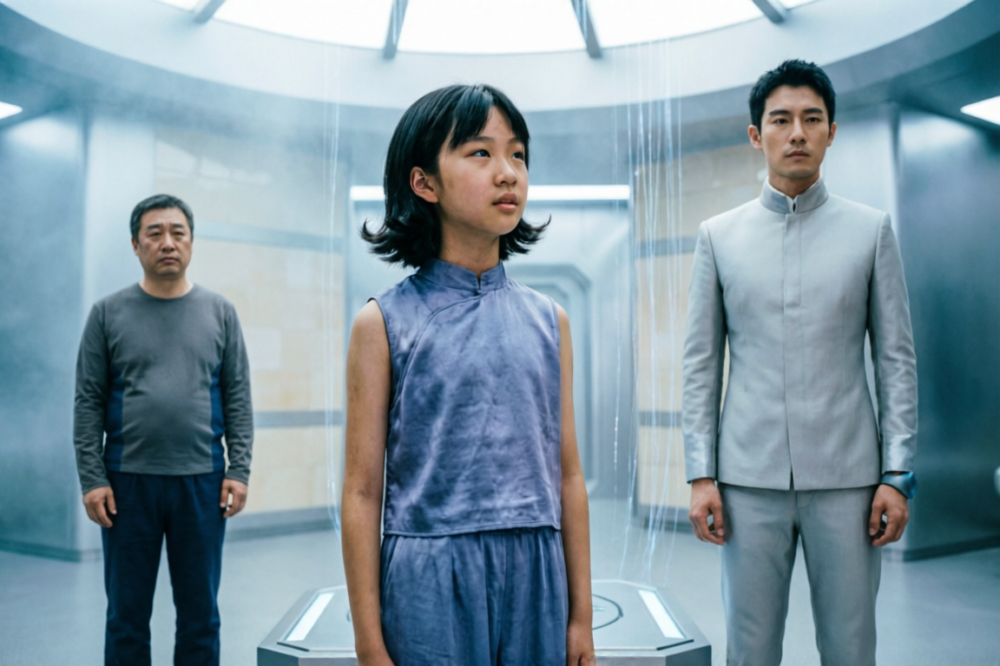


P04 当前交付
P04 等待区与父亲
当前主交付文件为 `part-04-waiting-zone-and-father-delivery-v1.mp4`。这条成片对应规范段 `P04`，严格按 `5` 镜合同推进：先让等待区阈值和签字笔/安抚屏的温柔压迫成立，再把父亲与林澄锁进同一空间，最后才进入 `父亲先 -> 林澄后` 的两条同步短线。当前口径不再回退到旧的 `4` 镜压缩版本。
- 主文件：`part-04-waiting-zone-and-father-delivery-v1.mp4`
- 成片规格：`1152x768 / 30fps / 13.8s / AAC stereo`
- 结构路线：`CH01-P04-S01` 等待区进入、`S02` 签字笔与安抚屏、`S03` 双目标成立、`S04` 父亲同步短线、`S05` 林澄同步短线
- 当前判断：`P04 delivery v1 / PASS WITH NOTES`，可作为正式审片入口
- 通过点：等待区先于对白成立，人物身份稳定，父亲与林澄都改成单镜单句同步口型
- 保留 notes：`S02` 仍是文字叠层 + 世界内轻音路线；speaking shot 仍需继续靠人工审片确认中文内容与口型完全贴合
- 后续只做定向升级：默认不重开 `P04`，仅在父亲或林澄 speaking shot 需要更强同步时再局部替换
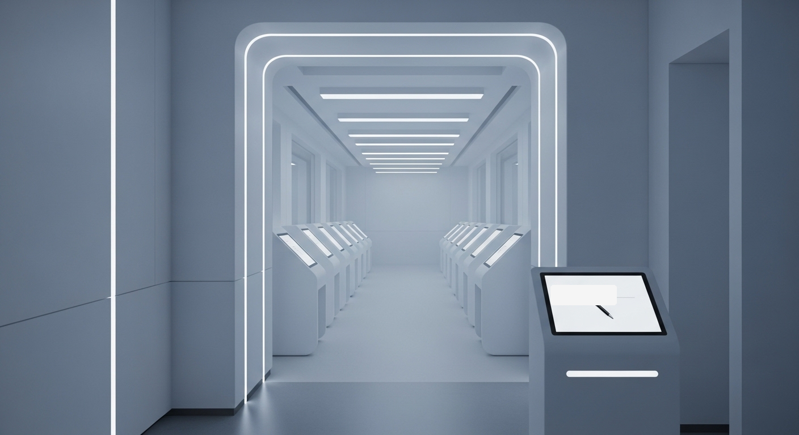
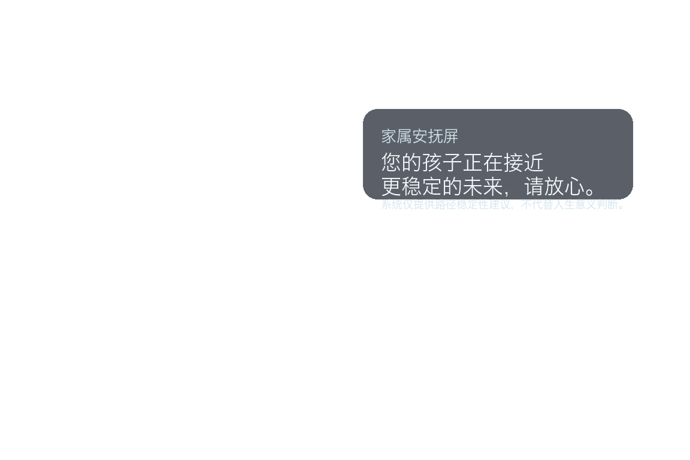
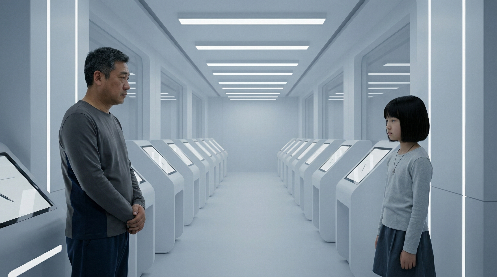
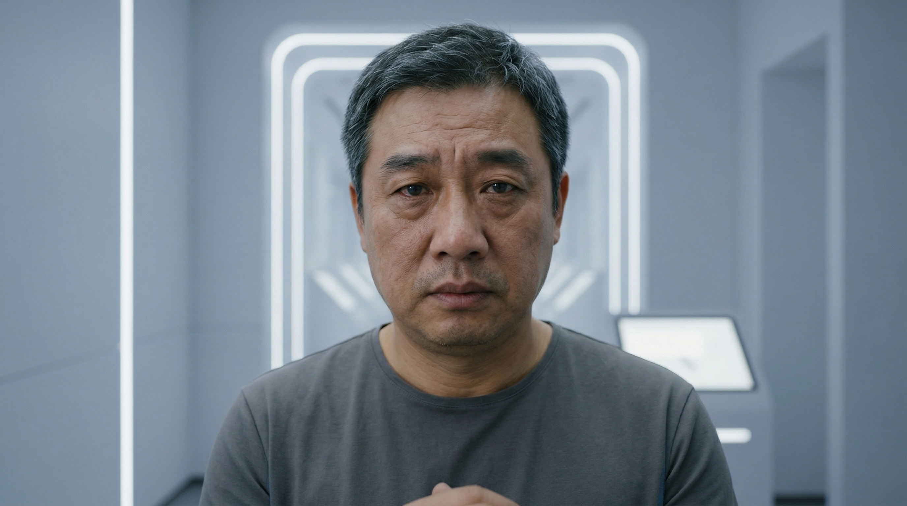
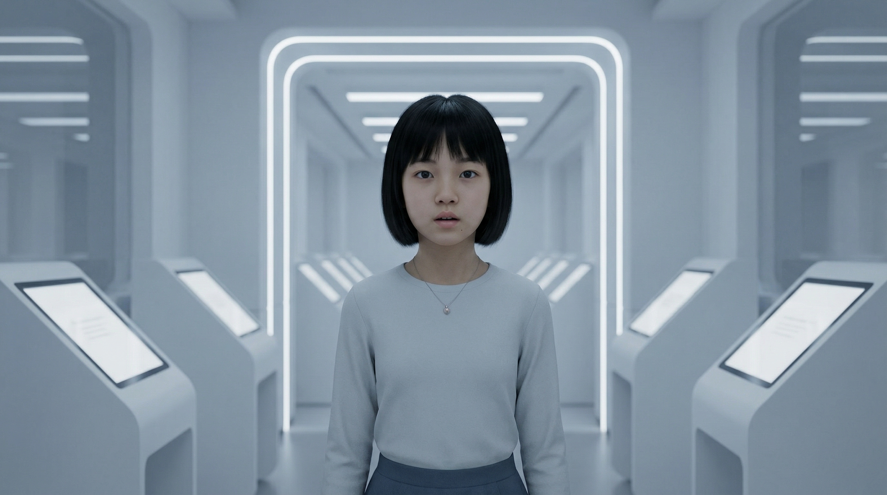
P05 当前交付：概率长廊
P05 概率长廊
当前 `P05` 已经从“讲清故事、跑通流程”的 rough 口径，推进到 `D02` 也有真实动态承载体的 `delivery v2`。现阶段仍保留 `D01` 的三路径建立与 `D04` 的异常风声桥接为 story-first 主线，但 `D02` 已不再只是同空间 UI 分层，而是先有真实路径比较 clip，再叠回轻交互层保证可读性。
- `D01` 当前工作图：`qwen-image-max` 生成的概率长廊三路径 scene-state，按 rough pack 先承担“系统推荐未来成立”这件事
- `D02` 当前工作层：已由真实 `viduq3-turbo` 路径比较 clip 接管，再把 `路径切换 + 价值勾选` overlay 作为轻交互层叠回同一长廊空间
- `D04` 当前正式 clip：`viduq3-turbo` 生成的桥接反应镜头，已把 rough keyframe 提升成正式可审视频
- `paper cut` 当前基线：`part-05-probability-corridor-papercut-v1.mp4`，继续保留为 story-first 节奏对照
- 当前判断：`P05 / accepted_with_notes / delivery v2`
- 当前结论：`D01 v1 + D02 real clip + D04 v1` 已收成 `part-05-probability-corridor-delivery-v2.mp4`。概率长廊当前已不再主要像“同图说明页”，而是一段真实短视频比较段
- 后续只做定向升级：`P05` 继续保留当前交付，若后续重开，只允许针对 `D01` 的空间奇观感、`D02` 的比较时长与 `D04` 的路径余光做局部修复
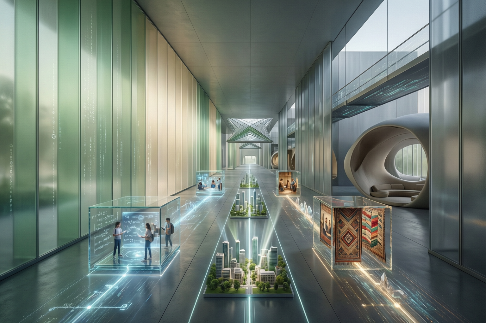

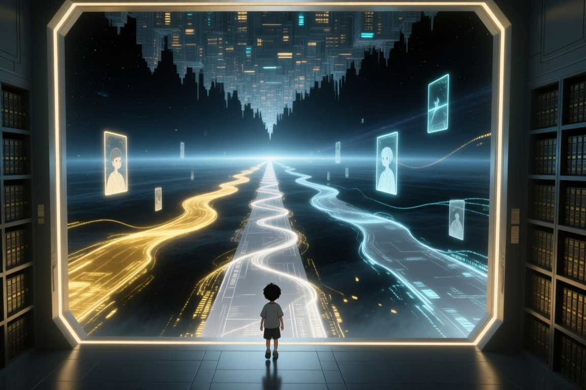
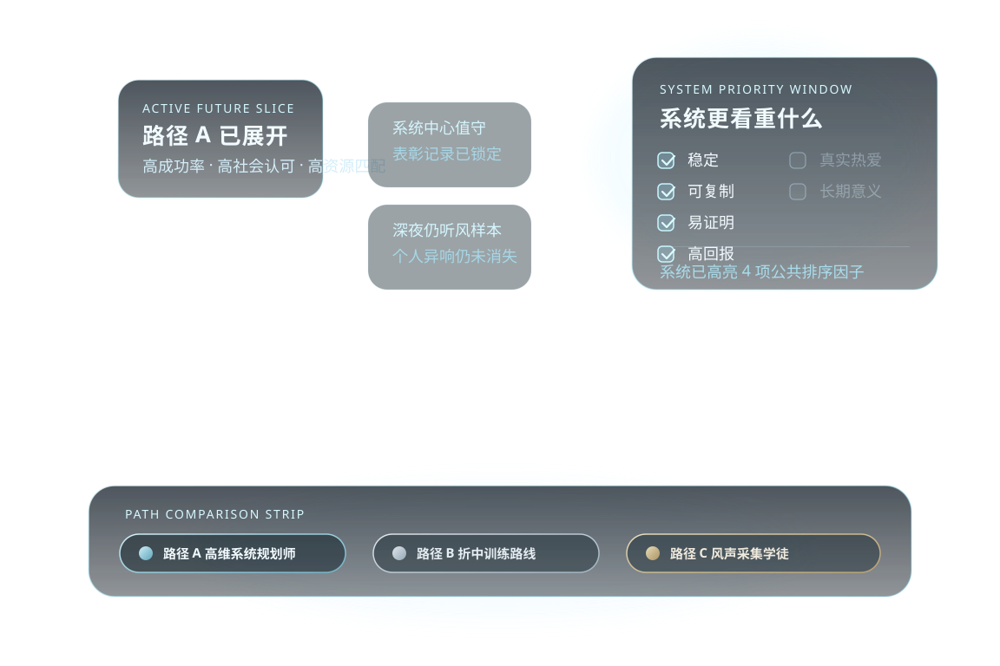
P06 当前交付：暗层接口
P06 当前交付口径
`P06` 现在已经升级到当前可审的 `delivery v4`。这一版不再是用静帧和 rescue 顶住结构，而是把 `进入暗层 -> 拼接异常波形 -> 第四路径显形 -> 旧录音进入` 四个职责都真正落回到真实动态 clip 上，再把 backlog 收缩成节奏、声场和上下游连续性的 polish。
- 当前判断：`P06 / accepted_with_notes / delivery v4`
- `E01` 已升级成真实入口换挡 clip，继续只负责从公开长廊带入暗层接口，不提前亮第四色，也不提前开旧录音
- `E02` 已从 `scene-state + overlay` 升级成真实波形解谜短 clip，当前不再靠同图说明层冒充视频
- `E03` 已由正式 `viduq3-turbo` clip 接管，第四色第一次明确成立不再靠受控 rescue 承担主线职责
- `E04` 也已升级成真实旧录音界面 clip，当前继续保留“录音先于形象”的保守路线，不让完整人物抢在 `P07` 之前出镜
- 当前结论：`P06` 已经脱离最高优先假视频债务区，剩余 notes 转为节奏、声场和 `P05 -> P06 -> P07` 的入口连续性
- 后续只做定向 polish：优先收暗层声场桥与装配 trim，不再因“这段还是假视频”重开整段结构
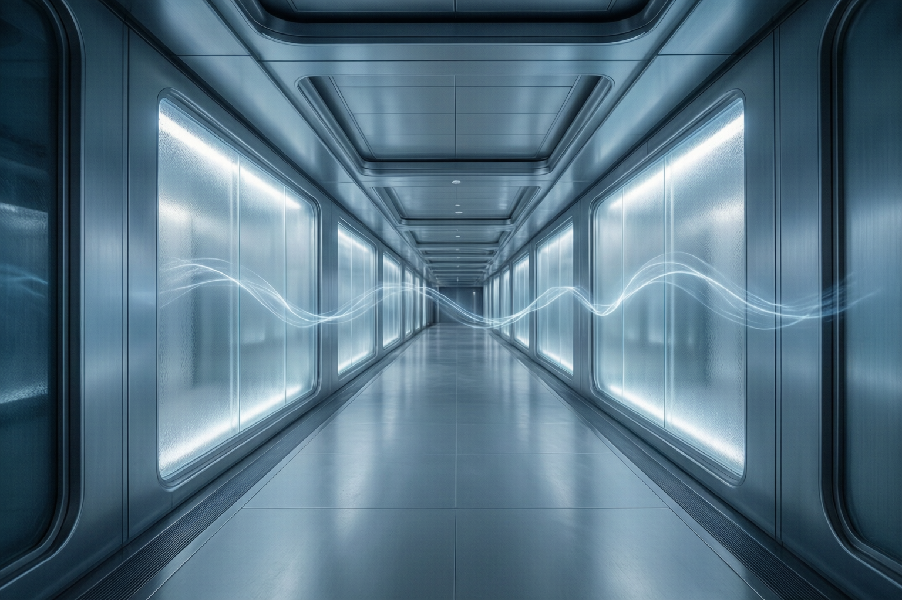
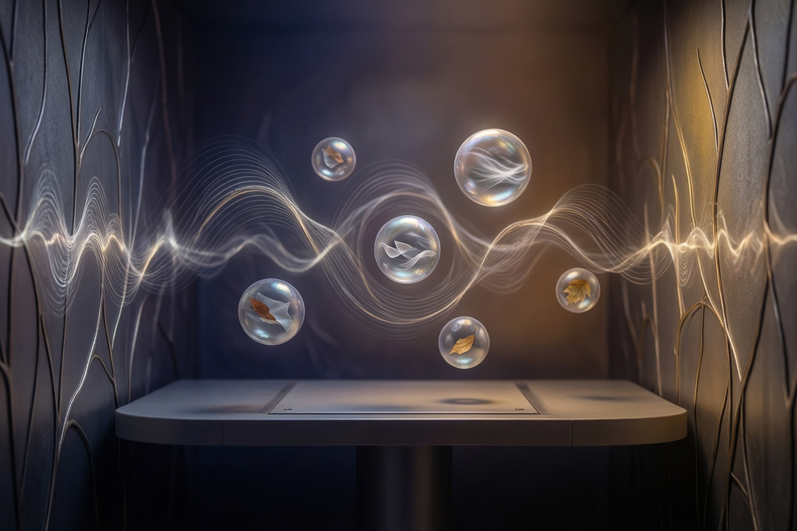
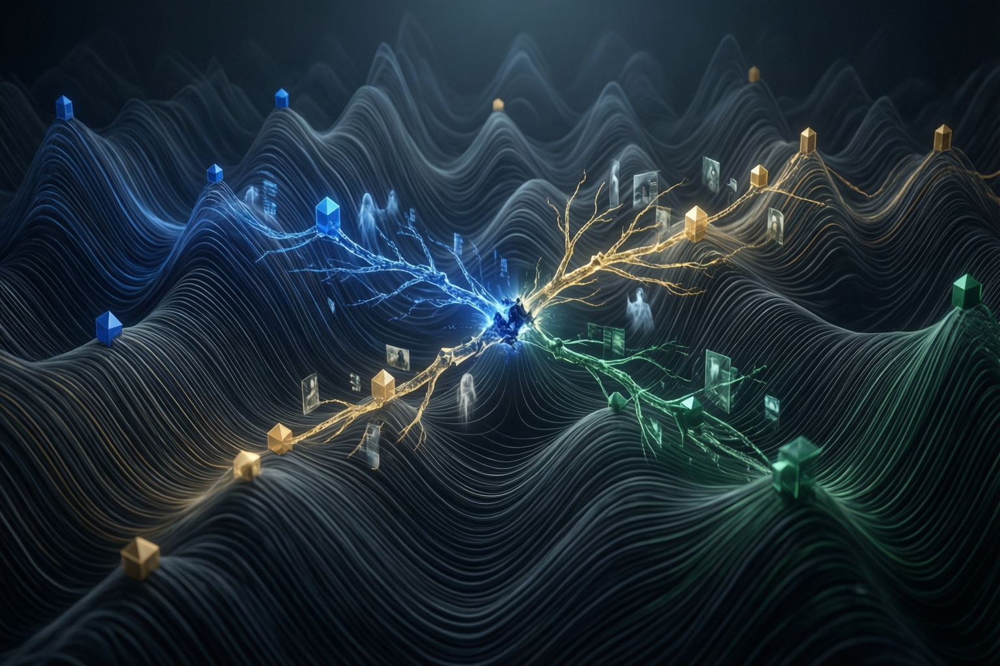
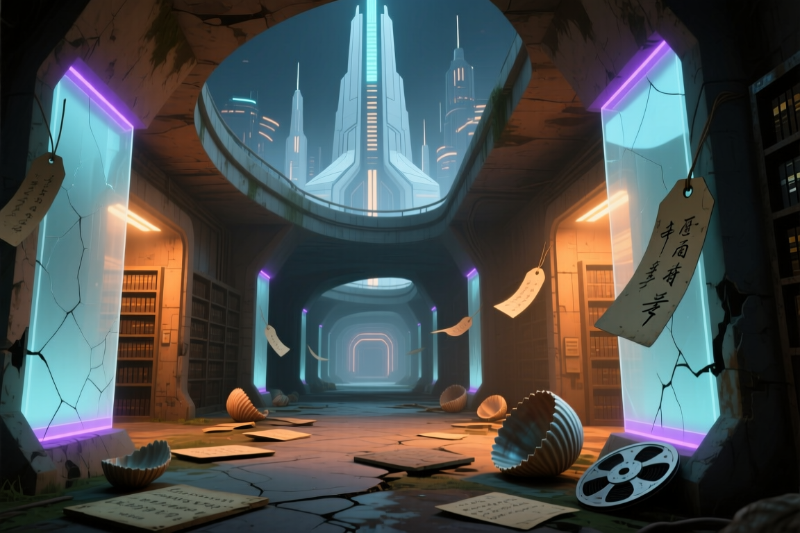

P10 当前交付：自由回响台辩论
P10 当前交付口径
`P10` 当前已经收成了新的 `delivery v1`。这条交付继续严格遵守 `story-first`：先让回响台公共空间亮起，再把证据与立场组织保持在世界内 UI 层中，随后直接接入新 key 下成功生成的 `F03 / qingyun / viduq3-turbo` 正式短 clip，让对手投影真正以可用动态镜头进入公共场域，并把同步短句人声一起接回 part-level 音轨，最后把公开陈词提交推进到可进入终局选择的状态。当前最关键的变化不是“又多试了几个模型”，而是 `P10/F03` 已经真实拿到第一条正式通过项，因此这一段不再依赖旧 `rescue clip` 来承担高潮的对手入场。
- 当前判断：`P10 / accepted_with_notes / delivery v1`
- `F01` 已锁为回响台空间建立位：先让“城市正在倾听”成立，不提前塞对手、输入区或主持式口播
- `F02` 继续固定 `UI-first`：这段的价值是证据与立场组织，不值得先烧成长视频
- `F03` 当前已升级为正式 `viduq3-turbo` clip，并通过轻量 `W9` 复核：身份稳定、无额外人物、无乱字幕，也不再是“图片晃几下”的假动作
- `part-10 delivery v1` 的当前音轨已经把 `F03` 原始短句人声接回去，不再保留“画面里嘴在动、成片里只有提示音”的错位感
- `F04` 继续保持 `UI-first`，当前以提交层 overlay 承担“我愿意公开怎么说”的职责
- 当前已接入 `P10/F03` 的 Qingyun tested pool 仍保留为 `30` 个模型的 rotation harness；其中现在已经明确拿到 `1` 个真实通过项：`viduq3-turbo`
- 这不等于“已经筛出稳定模型池”。更准确的说法是：当前已经有一条正式可用解，但其余 `29` 个模型大多仍停留在 `401 / 429 / 502 / 500` 的失败或观察态
- 最值得继续观察的非通过项仍是：`veo3.1-fast = 429` 与 `veo3.1-pro = 502`；它们保留给下一轮冷却后补测，不再阻塞当下主交付
- 批量恢复工具与轮换脚本都已就位：`generate_qingyun_vidu.py` 的 `--continue-on-error`、结构化 `failure-log`，以及 `scripts/production/run_p10_f03_qingyun_rotation.sh` 现在都保留为后续继续筛“今天能用哪些模型”的基础设施
- 已补备用正式路由：`DashScope / wan2.6-i2v-flash` 的 `F03` 请求模板已经写好并通过 dry-run，后续若要继续做 provider 备份，只差可注入的 `DASHSCOPE_API_KEY`
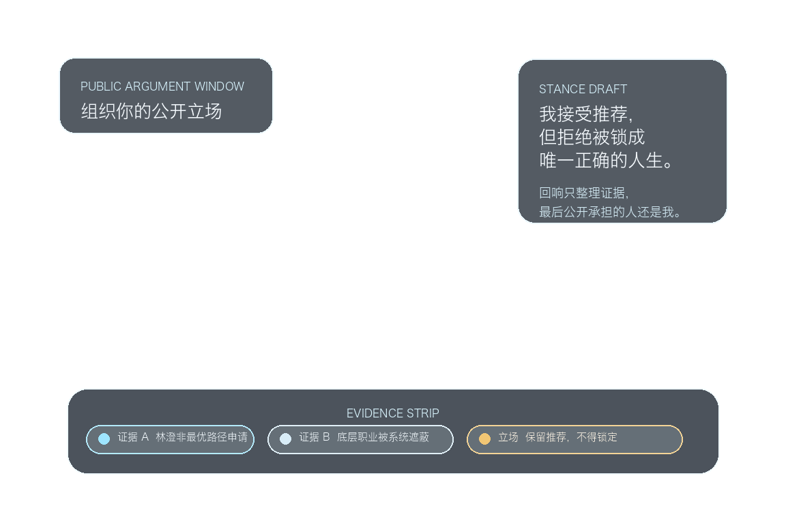
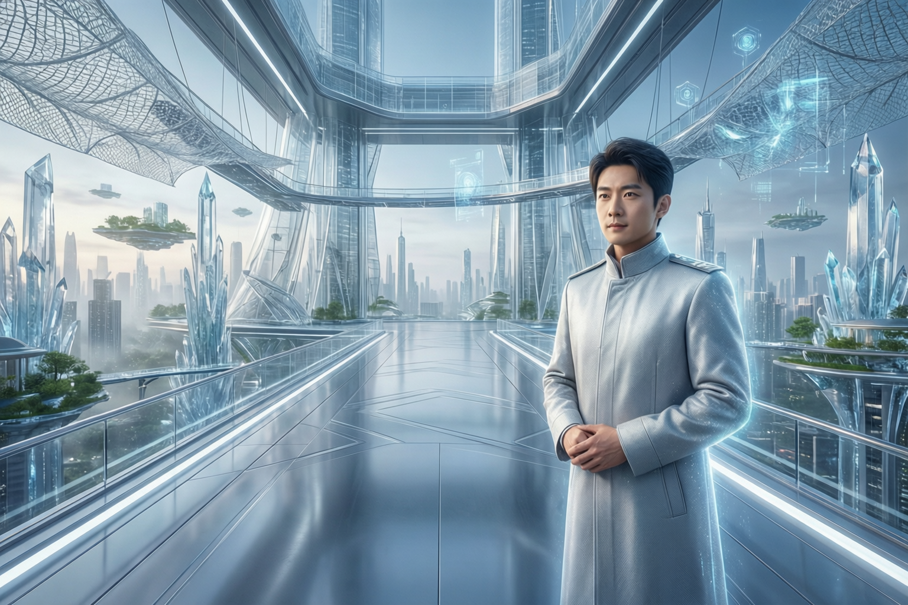
P11 当前交付：午夜前选择与回航
P11 当前交付口径
`P11` 当前已经从 rough preview 升级到 `delivery v1`。这一版继续严格按 `G01 -> G02 -> G03 -> G04` 收束终局，但 `G02` 已不再是静帧 overlay，而是能真正落到人物脸上的正式同步短 clip。
- 当前判断：`P11 / accepted_with_notes / delivery v1`
- `G01` 已锁为终局确认位：制度结果、确认书与林澄重新回到同一画面，不再停在抽象系统页
- `G02` 已由 `qingyun / viduq3-turbo` 成功出片，并通过当前 `W9` 轻量 QC：人物身份稳定、年龄感仍对、没有多余人物、乱字幕或演讲腔
- `G03` 继续固定 `UI-first`：制度动作被接收即可，不抢 `G02` 已经拿到的正式人物资源
- `G04` 当前仍作为回航桥接位：先让未来湾出口与裂口档案墙成立，再把数字导师留到 `P12` 作为世界内接入
- `P11` 现阶段的 notes 主要是：`G03/G04` 仍是低成本 UI / bridge 口径，`G02` 目前是 `540p` 成功片，还留有后续升格空间
- 这些 notes 已经不再阻塞当前交付；后续若要升格，优先考虑把 `G02` 提到更强分辨率，其余结构保持不动
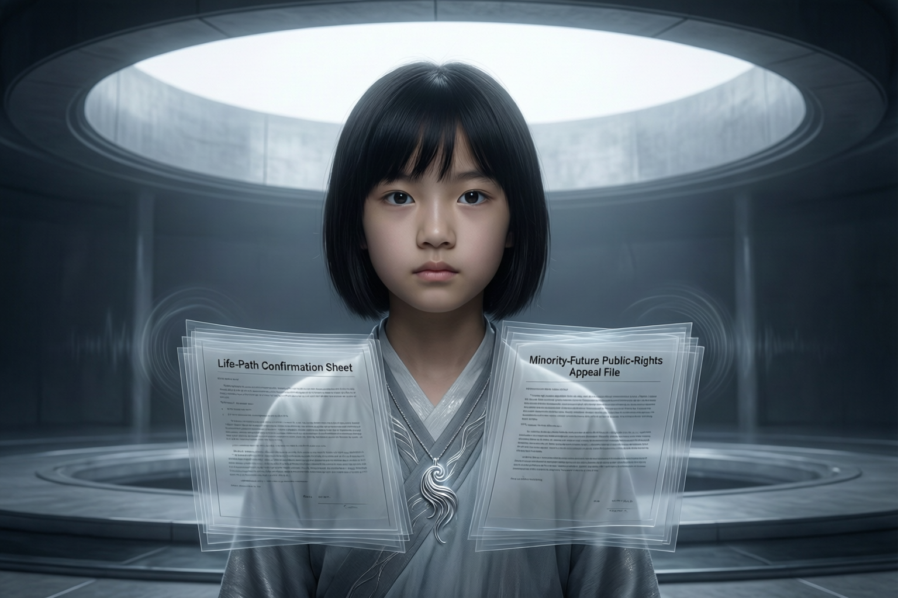
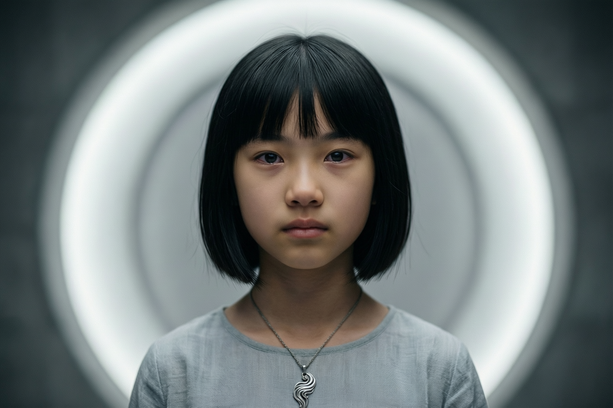
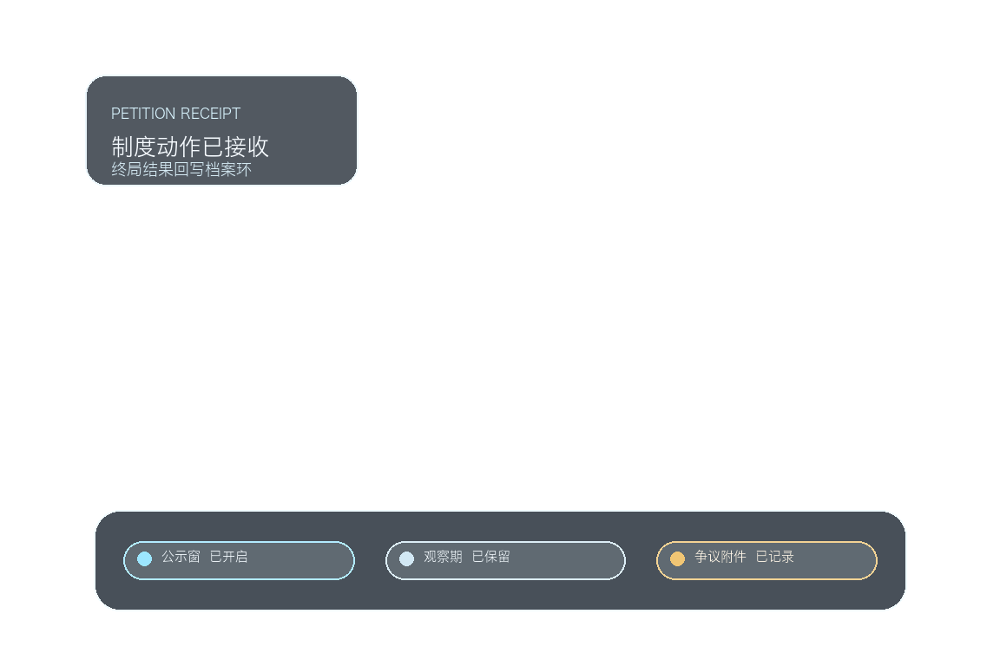
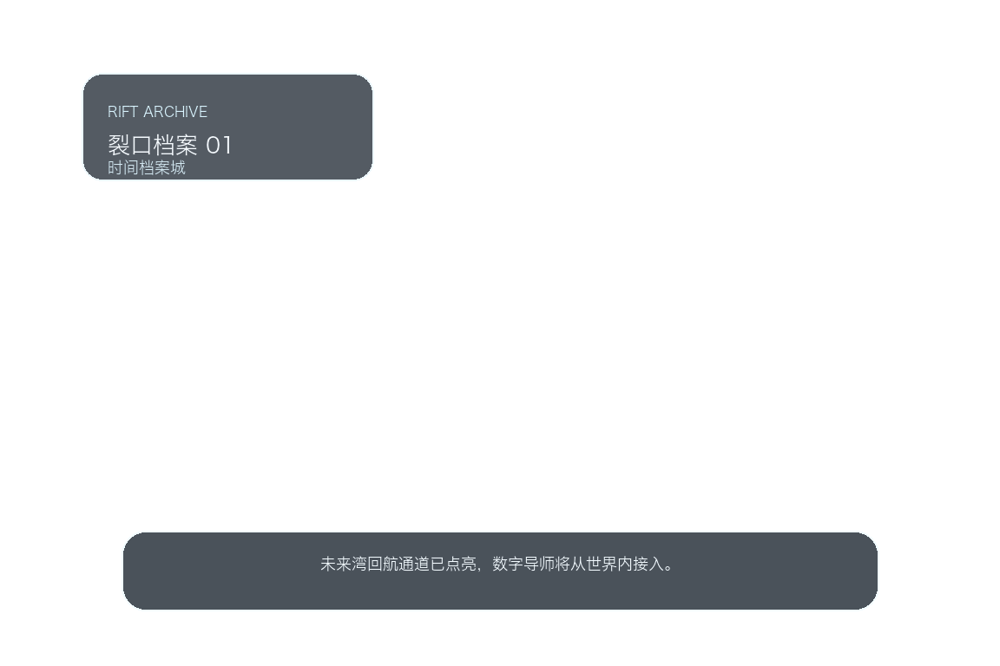
P12 当前交付：数字导师总结
P12 交付边界
`P12` 当前不再沿用旧版 `4` 镜总结段，而是压成单镜 `G05` world-in 收束。重点不是“再讲一段课”，而是让孩子在回航口被接住，然后带着一个问题离开。
- 当前判断：`P12 / W11 / accepted_with_notes / PASS WITH NOTES`
- `G04` 已经完成回航桥接，所以 `P12` 不再重拍回到未来湾的建立位
- `G05` 首版只保留 3 个内部 beat：接住情绪、抽出命题、留下问题
- 目标时长压到 `18-24 秒`，不再做 `60-90 秒` 的长讲述
- `S-09 mentor-space v2` 已成为当前 accepted clean plate；这张图先把安全回航与接待位预留成立
当前交付口径
`P12` 已正式收口为 `clean plate + voice-first + 轻问题 overlay`。首版交付不再追可见导师人形，而是用稳定回航空间和温和声音完成 world-in 离场。
- 正式 voice：`zh-CN-XiaoxiaoNeural`
- 当前 audio contract 已单独落为 `part12-v1-digital-mentor-contract.aiff`
- `C-08` 未锁形前，首版不直接开启清晰正脸长视频；若后续升级，只补极弱导师界面或单独开锁形任务
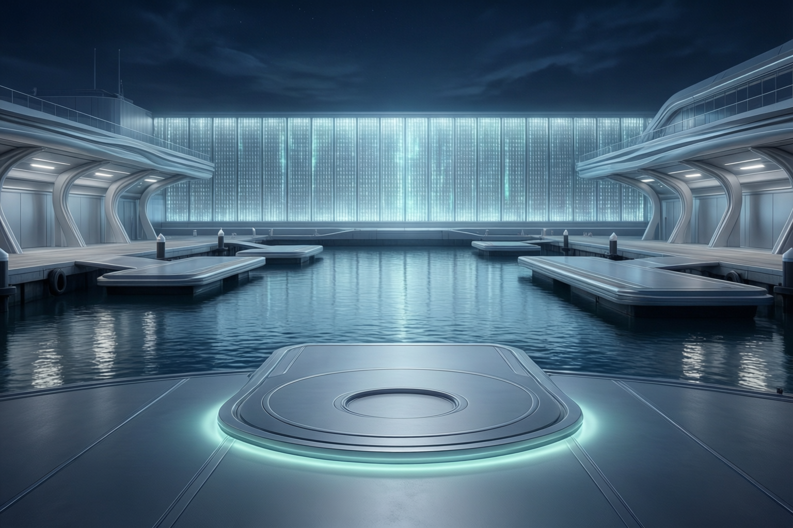
固定团队与角色锚点
玩家 / 学生主位
身份：未来湾见习建造者第一人称主位。
作用：把分散信息、人和立场组织成判断，并承担团队最后的走向。
林澄
身份：chapter-01 之后与未来湾长期连接的常驻伙伴起点。
作用：让“制度问题”落进具体人生冲突。
祁野
身份：未来湾设备棚常驻少年成员。
作用：拆规则、查输入、建证据链，保证团队不过度依赖情绪判断。
闻夏
身份：未来湾公共舞台的少年组织者。
作用：把复杂问题翻译成别人能理解、能加入、能共同承担的公共表达。
档案守望者
身份：未来湾高阶记录者与任务发放者。
作用：打开任务入口，维持文明视角，不代替孩子下判断。
阿潮 / 回响 / 序列员 07
阿潮：未来湾公共航行器与转场角色。
回响：常驻 AI 协作伙伴，负责整理与协作，不越权。
序列员 07：制度逻辑代表，承担稳定、精准且持续施压的对手功能。

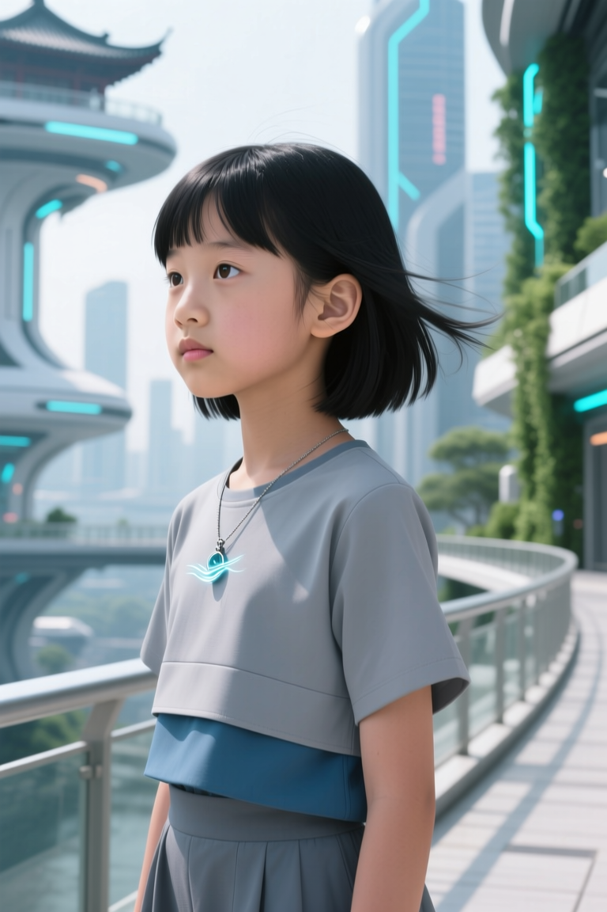

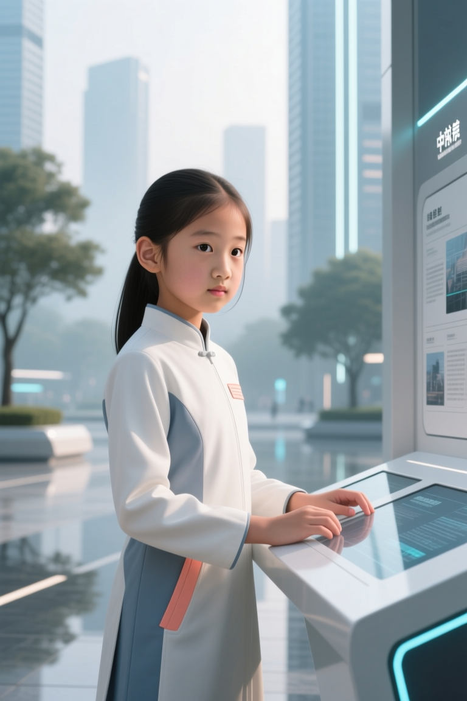


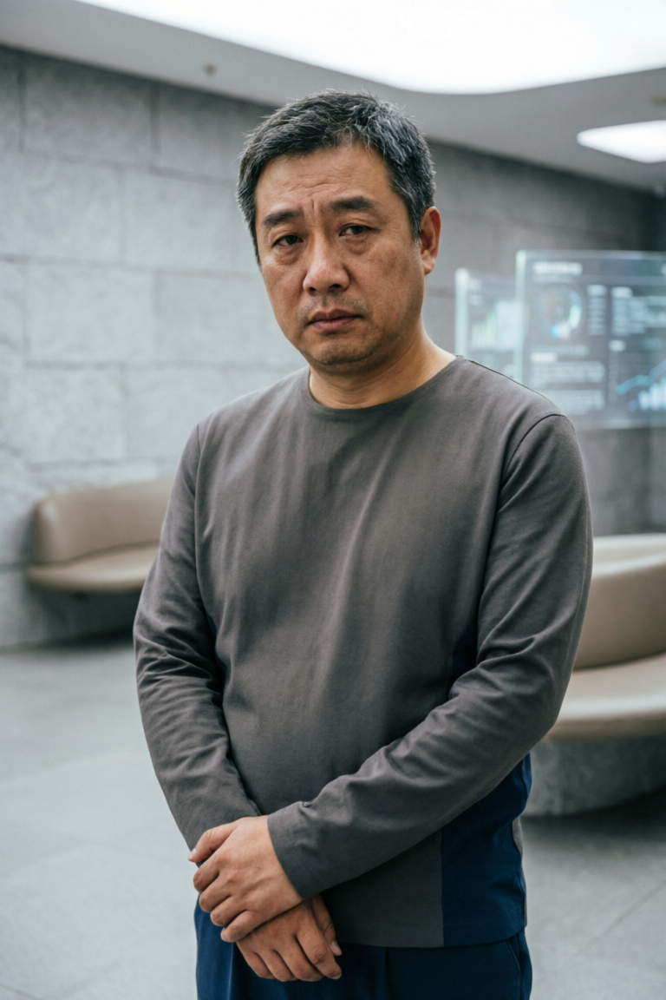
主场景母图
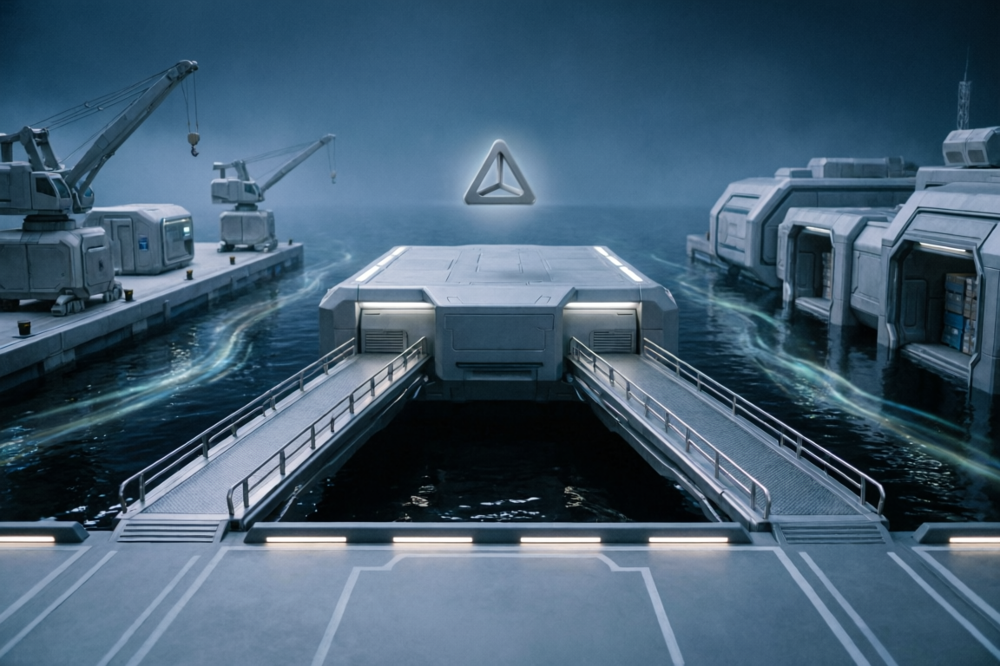


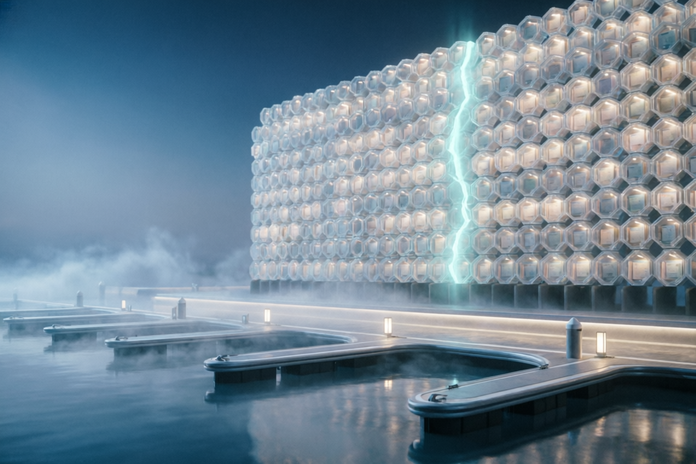
开场镜头资产
P01 前段首帧组（到场 / 信号点亮）
这组首帧与对应视频是当前 `P01 v9` 仍在复用的稳定开场资产。展示口径统一按规范编号解释；旧文件名 `A01-A03` 仅保留为兼容历史装配链的资产别名。本节保留的 `shots/...` 与 `videos/...` 直链默认都按“开场档案资产 / 历史对照”阅读，不等同于页面其他位置的 `current/...` 主锚点。
- `CH01-P01-S01`：第一人称站上未来湾任务码头
- `CH01-P01-S02`：灰银级请求信号点亮
- 历史建立资产：旧 `SHOT-A02`，当前仅保留为空间 mood reference
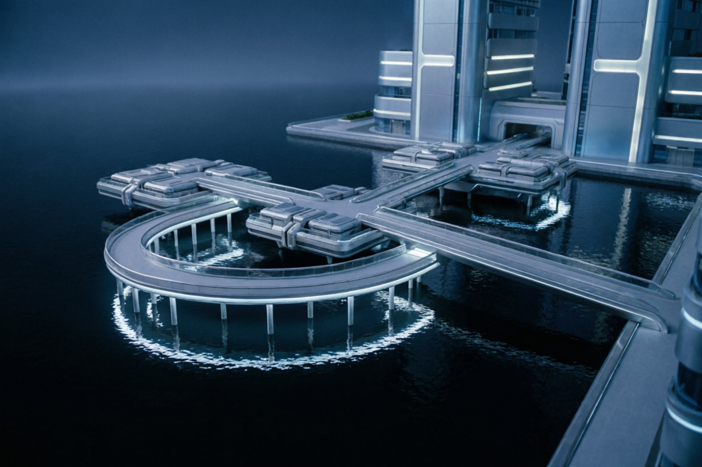
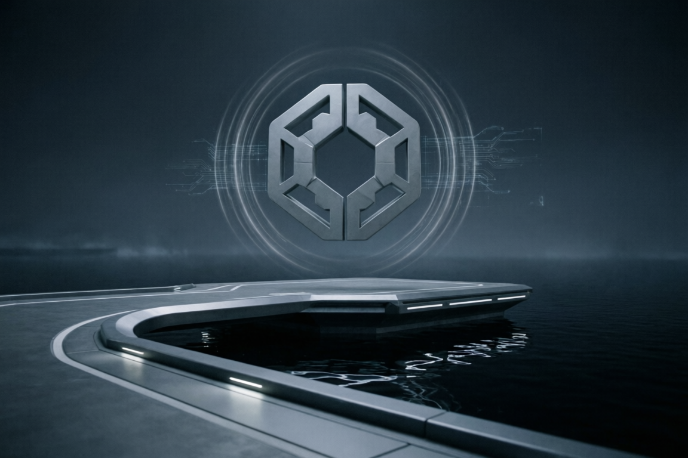
CH01-P01-S03 / S04 固定小队运转
这是 `P01 v10` 当前的关键中段资产。它们的职责不是介绍角色，而是让孩子先看懂“未来湾固定小队已经在运转，而我就在这支队伍的责任中心”。当前正式使用路线已升级为 `真实镜头 + 同步人声`：`S03` 由阿潮短播报接入，`S04` 由祁野在工作中发出唯一一句短线。
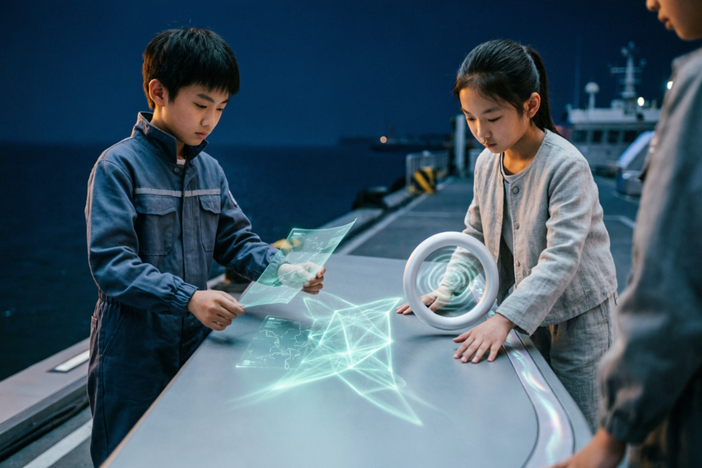
CH01-P01-S05 任务正式交付（历史文件别名 A04）
这一组资产对应 `P01` 的守望者正式交付职责。当前 `P01 v10` 继续复用已经可用的 `Wan 2.6` 同步声画版本，让守望者作为当前段落里唯一稳定的成人交班镜头。
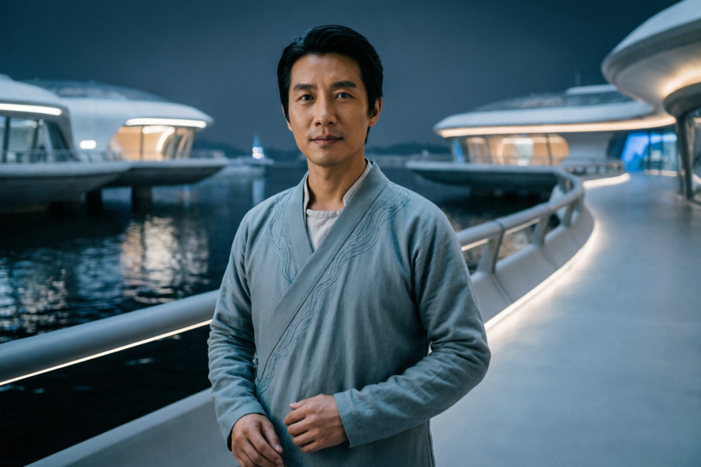
CH01-P01-S06 林澄争议切片与责任后果
`P01 v13` 继续保留“先让林澄本人出现，再叠争议责任信息”的路线，但这一镜已经切换到新的同步音视频 clip。当前做法是：林澄在镜头里说一句更短、更稳的关键句，确保口型、语气和镜头尾部都能自然落地；右侧继续叠受控 dispute overlay，用来压住模型自发的文件文字并补齐责任后果。


CH01-P01-S07 接受任务后的启航（历史文件别名 A06）
这一组资产对应 `P01` 的接受任务后启航段。`P01 v10` 当前已改用新的 world-audio clip：镜头重新回到真实启航视频，但不再接受随机字幕、伪英文或尾段音乐。阿潮可见试用首帧仍保留为探索资产，不进入主交付。